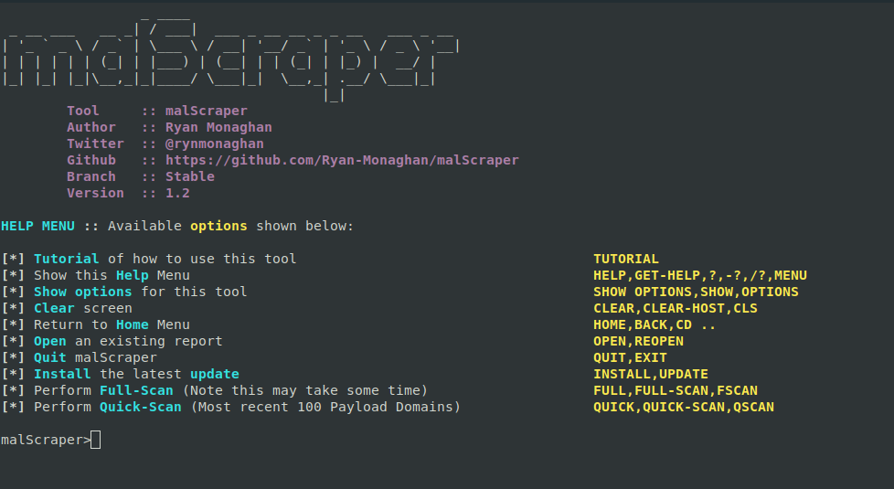
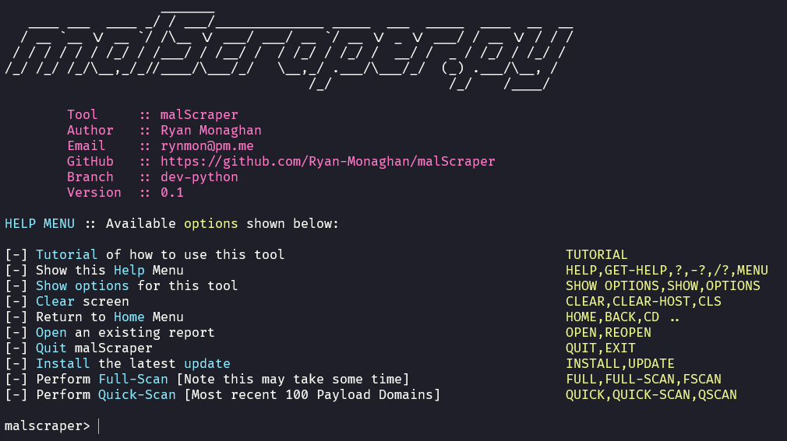

malscraper v2.0.1
a high-performance rust-based tool that streamlines the process of scraping and managing lists of payload domains, ioc's & c2 ips from various feeds for easy blacklisting. now with advanced analysis, export capabilities, and automation support.


table of contents
contents
introduction
malscraper is a high-performance rust-based tool that streamlines the process of scraping and managing lists of payload domains, ioc's & c2 ips from various feeds. it simplifies the task of blacklisting for security and threat intelligence purposes, with advanced analysis capabilities, export formats, and automation support.
written in rust for maximum performance, malscraper delivers 3-5x faster processing than previous versions while maintaining a single binary with no runtime dependencies. the tool now includes comprehensive features for threat intelligence analysis, including statistics dashboards, search and filtering, report comparison, historical tracking, validation, deduplication, and export to various firewall and siem formats.
features
- high performance: written in rust for 3-5x faster performance than python version.
- single binary: no runtime dependencies required after compilation.
- cross-platform: works seamlessly on windows, macos, and linux.
- statistics dashboard: comprehensive analytics and metrics for all reports.
- search & filter: search across reports with regex support.
- export formats: export to firewall rules (iptables, windows firewall, pfsense), siem formats (json, csv), and threat intelligence (stix/taxii).
- deduplication: remove duplicates across all reports and create unified master lists.
- historical tracking: track changes over time and identify new indicators.
- validation: validate ip addresses and domains, check if domains are still active.
- custom feeds: add, list, and remove your own custom feed urls.
- non-interactive mode: cli arguments for automation and scripting.
- report comparison: compare two reports side-by-side to see differences.
- whitelist management: whitelist false positives and exclude known-good indicators.
- version checking: verify if you are using the latest version on startup.
- download progress bars: clean, color-coded progress bars for all downloads.
- payload report obfuscation/zip: choose to obfuscate or zip the payload report before it is written to disk, to help avoid antivirus false positives.
⚠️ antivirus warning
some reports generated by malscraper (especially PayloadReport.txt) may be flagged or quarantined by antivirus software (such as windows defender) because they contain known malware indicators. these files are for research and defensive use only.
- you will be prompted to obfuscate or zip the payload report to help avoid false positives.
- if you need to retain these files, consider adding an exclusion for the report directory, or use the obfuscate/zip options.
current release notes
malscraper 2.0.1 - automatic update installation
overview
added automatic update installation feature, allowing users to update directly from within the application without manual downloads.
new features
- automatic update installation - download and install updates directly from the app
- platform detection - automatically finds the correct binary for your operating system and architecture
- download progress - shows real-time download progress with percentage and bytes
- automatic backup - creates a backup of the current executable before updating
- executable permissions - automatically sets correct permissions on unix systems
- error handling - graceful error handling with fallback to manual download instructions
usage
simply run UPDATE or INSTALL from the interactive menu, or use the update checker that runs automatically on startup. when a new version is available, you'll be prompted to update.
malscraper 2.0.0 - rust rewrite & major feature expansion
overview
complete rewrite in rust, delivering 3-5x better performance, a single binary with no runtime dependencies, and a comprehensive suite of new features for threat intelligence analysis, automation, and integration.
key features
performance & architecture
- written in rust for maximum speed and efficiency
- single binary - no runtime dependencies required
- 3-5x faster than python version
- lower memory usage (~10-20mb vs ~50-100mb)
- async downloads with parallel processing
- memory-safe code with rust's ownership system
analysis & intelligence
- statistics dashboard - comprehensive metrics and analytics for all reports
- search & filter - search across reports with regex support
- report comparison - compare two reports side-by-side to see differences
- historical tracking - track changes over time and identify new indicators
data management
- deduplication - remove duplicates across all reports and create unified master lists
- validation - validate ip addresses and domains, check if domains are still active
- whitelist management - whitelist false positives and exclude known-good indicators
export & integration
- firewall rules - export to iptables, windows firewall, and pfsense formats
- siem formats - export to json and csv with metadata
- threat intelligence - export to stix/taxii formats
customization & automation
- custom feeds - add, list, and remove your own custom feed urls
- non-interactive mode - cli arguments for automation and scripting
- tab completion for all commands
- detailed error messages with usage examples
installation
download pre-built binaries
download the latest release from github releases for your platform:
- windows:
malscraper-x86_64-pc-windows-msvc.exe - macos:
malscraper-x86_64-apple-darwinormalscraper-aarch64-apple-darwin - linux:
malscraper-x86_64-unknown-linux-gnuormalscraper-aarch64-unknown-linux-gnu
build from source
requirements:
- rust 1.70+ (install from rustup.rs)
- visual studio build tools (windows) or gcc/clang (linux/macos)
build commands
cd rust cargo build --release
the binary will be at rust/target/release/malscraper (or .exe on windows).
usage
interactive mode
malscraper
available commands include:
FULLorFULL-SCAN- complete scan of all feedsQUICKorQUICK-SCAN- quick scan (most recent 100 domains)STATS- view statistics dashboardSEARCH <term>- search for terms across reportsCOMPARE <report1> <report2>- compare two reportsDEDUPEorUNIQUE- deduplicate all reportsVALIDATE <report>- validate indicatorsEXPORT <format> <report>- export to various formatsWHITELIST- manage whitelist (add, list, remove)FEEDS- manage custom feeds (add, list, remove)HELP- show help menuTUTORIAL- show tutorial
non-interactive mode (cli)
# quick scan with custom output directory malscraper quick-scan --output-dir ./reports # full scan malscraper full-scan --output-dir ./reports # export to iptables format malscraper export iptables payload # search across reports malscraper search malware.com # view statistics malscraper stats # see all available commands malscraper --help
migration from python version
if you were using the python version:
- download the rust binary from releases
- your existing reports will still be in the same location
- commands are similar - use
HELPto see all available commands - better performance - downloads and processing are faster
known issues
- antivirus software may flag or quarantine reports containing known malware indicators (see antivirus warning)
- some terminal emulators may not fully support all color codes
version history
-
2.0.1 - automatic update installation
- automatic updates:
- download and install updates directly from within the application
- platform detection for windows, linux, and macos
- architecture detection (x86_64, aarch64)
- download progress indicator
- automatic backup before replacement
- executable permissions set automatically on unix
- graceful error handling with fallback instructions
-
2.0.0 - rust rewrite & major feature expansion
- complete rust rewrite:
- 3-5x faster performance than python version
- single binary with no runtime dependencies
- lower memory usage (~10-20mb vs ~50-100mb)
- async downloads with parallel processing
- new analysis features:
- statistics dashboard with comprehensive metrics
- search & filter with regex support
- report comparison to see differences between scans
- historical tracking to identify new indicators
- data management:
- deduplication across all reports
- validation of ip addresses and domains
- whitelist management for false positives
- export capabilities:
- firewall rules: iptables, windows firewall, pfsense
- siem formats: json, csv with metadata
- threat intelligence: stix/taxii
- automation & customization:
- non-interactive cli mode for scripting
- custom feed management
- tab completion for all commands
- detailed error messages with usage examples
-
1.4.5 - enhanced download experience & error handling
- download experience:
- download output is now clean and professional: only the download name, a progress bar, and a single success/failure line per file
- after each successful download, the full path of the saved file is displayed for user clarity
- payload report handling prints both the .txt and .zip file paths as appropriate
- the number of lines in the payload report is now included in the summary
- error handling:
- improved error handling for all downloads, with clear user feedback for failures
- fixed method ordering and linter errors
- user experience:
- the summary at the end of downloads is clearer, and the user is prompted to review before continuing
-
1.4.4 - home menu experience & navigation improvements
- home menu experience:
- the malscraper banner and social/application info are now always visible on initial launch and when returning to the home menu
- the help menu is displayed together with the banner and socials on the home screen for a welcoming, branded experience
- help menu behaviour:
- when the help menu is called directly (e.g., by typing help), the screen is cleared and only the help menu is shown, for clarity and focus
- navigation & cleanliness:
- improved screen clearing logic for all menus and prompts, ensuring a clean and consistent user interface
- removed unnecessary debug output from the initial launch
- bug fixes:
- fixed an issue where the banner and socials would disappear when showing the help menu
- fixed an issue where the home menu was not always shown after certain actions
-
1.4.3 - atomic self-update & user experience improvements
- atomic self-update:
- updates are now downloaded and staged in a temporary location
- the actual script replacement occurs safely on the next launch, avoiding issues with replacing a running script
- the previous version is always backed up before replacement
- user experience:
- after downloading an update, the user is prompted to exit, ensuring the update is applied immediately on restart
- improved and clarified user messaging throughout the update process
- eliminated double update prompt, users are only asked once per update cycle
- robustness:
- handles update failures gracefully and cleans up temporary files
- maintains compatibility with single-script update flow
-
1.4.2 - dependency management & banner rendering
- dependency management:
- the script now checks for required third-party packages (requests, pyfiglet) before running
- if any are missing, the user is prompted to install them automatically
- missing package messages are now highlighted in yellow and bold for better visibility
- all dependencies are listed in requirements.txt for easy setup
- banner rendering:
- the malscraper banner now adapts to the terminal width and is left-aligned for consistent display across environments
- code quality:
- refactored the location of the colours class to support early use in the script
-
1.4.1 - code improvements & user experience enhancements
- code improvements:
- completely restructured the codebase using object-oriented programming
- replaced string-based path handling with python's pathlib for more reliable cross-platform operation
- fixed semantic versioning comparison to handle updates correctly
- improved error handling with proper try/except patterns
- user experience:
- fixed non-functional "home" menu option
- enhanced progress visualization during downloads with proper progress bars
- added more descriptive status messages during operations
- improved terminal ui with better formatting and visual indicators
- added new splash text messages for variety
- performance:
- better file handling with proper context managers
- optimized update process with cleaner file operations
- improved resource cleanup during error conditions
- enhanced overall stability and error recovery
- cross-platform compatibility:
- improved path handling for windows, macos, and linux
- better file operation compatibility across different operating systems
- fixed platform-specific command execution
-
1.4 - complete rewrite in python
- fully cross-platform compatible with windows, macos, and linux environments
- maintains all the key functionality of the original bash script
- added new features, improving performance, and enhancing the user experience
-
1.3 - initial python conversion
- the tool has been converted to python for improved functionality
-
1.2 - version checking
- malscraper now verifies if you are using the latest version on startup
-
1.1 - reopen functionality
- added the ability to reopen a previously composed report
-
1.0 - initial implementation
- core functionality was implemented in the first release
installation
download pre-built binaries (recommended)
download the latest release from github releases for your platform. no installation required - just run the binary!
build from source
requirements:
- rust 1.70+ (install from rustup.rs)
- visual studio build tools (windows) or gcc/clang (linux/macos)
1. clone the repository.
git clone https://github.com/rynmon/malScraper
2. navigate to the rust directory.
cd malScraper/rust
3. build the release binary.
cargo build --release
4. the binary will be at:
target/release/malscraper (or .exe on windows)
usage
interactive mode
run the tool and follow the on-screen instructions:
malscraper
available commands:
FULLorFULL-SCAN- complete scan of all feedsQUICKorQUICK-SCAN- quick scan (most recent 100 domains)STATS- view statistics dashboardSEARCH <term>- search for terms across reportsFILTER [feed_type] [pattern]- filter reports by criteriaCOMPARE <report1> <report2>- compare two reportsDIFForCHANGES- compare with previous scanDEDUPEorUNIQUE- deduplicate all reportsVALIDATE <report>- validate ip addresses and domainsEXPORT <format> <report>- export to various formatsWHITELIST ADD <indicator> [reason]- add to whitelistWHITELIST LIST- list all whitelisted indicatorsWHITELIST REMOVE <indicator>- remove from whitelistFEEDS ADD <url> [name] [description]- add custom feedFEEDS LIST- list all custom feedsFEEDS REMOVE <name_or_url>- remove custom feedOPENorREOPEN- open a previously downloaded reportUPDATE- check for and install updatesHELP- show help menuTUTORIAL- show tutorialQUITorEXIT- exit the application
non-interactive mode (cli)
for automation and scripting:
# quick scan with custom output directory malscraper quick-scan --output-dir ./reports # full scan malscraper full-scan --output-dir ./reports # export to iptables format malscraper export iptables payload # search across reports malscraper search malware.com # view statistics malscraper stats # see all available commands malscraper --help
export formats
available export formats:
iptables- linux iptables ruleswindows- windows firewall rulespfsense- pfsense firewall rulesjson- json format with metadatacsv- csv format with metadatastix- stix threat intelligence formattaxii- taxii threat intelligence format
contributing
contributions are welcome! if you find a bug or have an enhancement in mind, feel free to open an issue or submit a pull request.
version checking
malscraper will automatically check for updates on startup. make sure you are using the latest version to benefit from new features and improvements.
license
this project is licensed under the mit license.